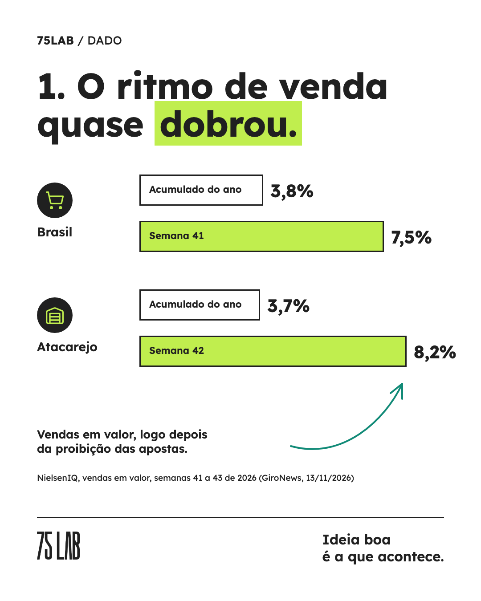
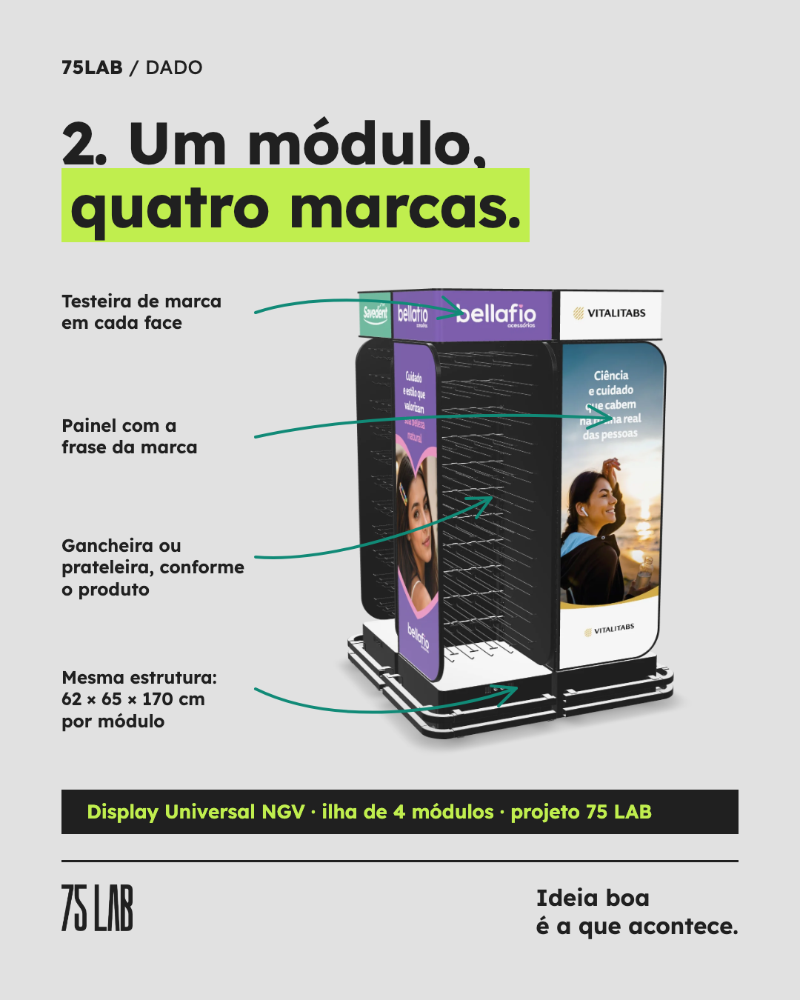
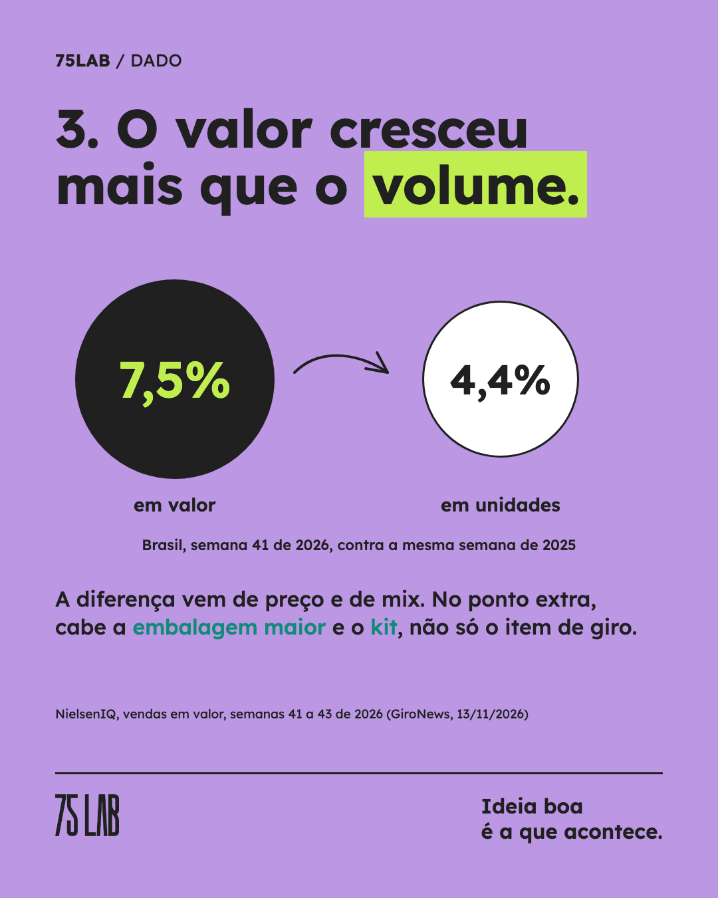
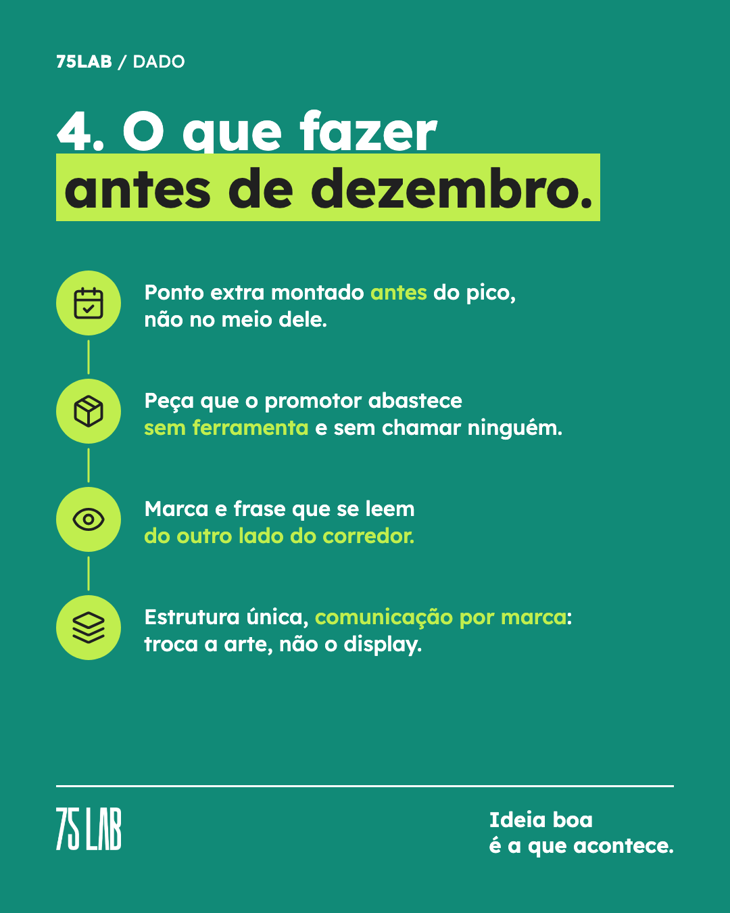
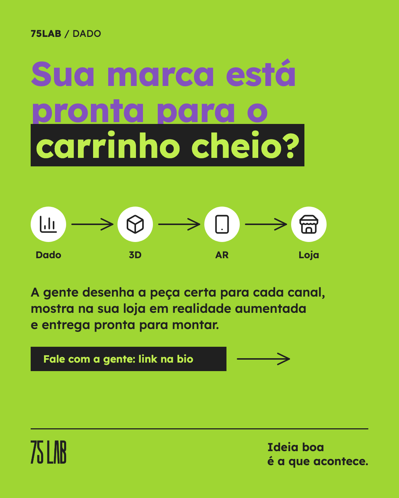

16/11 · dado
Sem bets, o carrinho acelerou: o varejo alimentar quase dobrou o ritmo de venda (NIQ) e o atacarejo lidera (Display Universal NGV)
Nas três semanas depois da proibição das bets, as vendas em valor do varejo alimentar cresceram 7,5%, 7,2% e 6,8%, contra 3,8% no acumulado do ano; no atacarejo, até 8,2% contra 3,7% (NielsenIQ). É a reta do fim de ano: o ponto extra tem de estar na loja antes do pico; estrutura única que troca só a comunicação chega mais rápido.
Toque em Aprovar, Pedir ajuste ou Não publicar em cada peça. Abre o GitHub com tudo preenchido: é só tocar em Submit new issue. No ajuste, escreva o que mudar. A rotina lê sua resposta na rodada seguinte (10h35, 12h35, 14h35 e 16h35) e o selo da peça muda aqui.
16/11 · sai a partir de 12:30
Instagram · carrossel











Legenda
O carrinho acelerou bem na reta do fim de ano. Segundo a NielsenIQ, nas três semanas depois da proibição das bets as vendas em valor do varejo alimentar cresceram 7,5%, 7,2% e 6,8%. No acumulado do ano, até a semana 43, eram 3,8%. No atacarejo, o salto foi de 3,7% para até 8,2%. Dois recados para quem cuida de trade: 1. O ponto extra de fim de ano tem de estar na loja antes do pico, não no meio dele. 2. Ganha quem monta rápido. No Display Universal que desenhamos para a NGV, um módulo só recebe a comunicação de quatro marcas, com prateleira ou gancheira conforme o produto. Juntos, viram uma ilha com uma marca por face. E repara: o valor cresceu mais que o volume. No ponto extra, cabe a embalagem maior e o kit. Fonte: NielsenIQ, publicado pela GiroNews em 13/11/2026. Mais projetos em 75lab.com.br/cases.html #trademarketing #pdv #atacarejo #varejo #merchandising
Carrossel no feed
16/11 · sai a partir de 10:30

Texto da página da 75 LAB
O carrinho acelerou bem na reta do fim de ano. Levantamento da NielsenIQ publicado nesta semana: nas semanas 41, 42 e 43 de 2026, logo depois da proibição das bets, as vendas em valor do varejo alimentar cresceram 7,5%, 7,2% e 6,8%. O acumulado do ano até a semana 43 era de 3,8%. No atacarejo, foram 7,8%, 8,2% e 8,1%, contra 3,7% no acumulado do canal. O que isso pede de quem cuida de trade, agora: 1. Ponto extra de fim de ano montado antes do pico, não no meio dele. 2. Peça que o promotor abastece sem ferramenta, porque giro alto é reposição o dia inteiro. 3. Estrutura única, comunicação por marca. No Display Universal que desenhamos para a NGV, o mesmo módulo de 62 × 65 × 170 cm leva Vitalitabs, De Llares, Bella Fio ou Savedent, e quatro módulos viram uma ilha. 4. Olho no mix: o valor cresceu mais que as unidades (4,4% na semana 41). No ponto extra, cabe a embalagem maior e o kit. Fonte: NielsenIQ, via GiroNews (13/11/2026). Projetos em https://75lab.com.br/cases.html #trademarketing #pdv #atacarejo
Texto do seu perfil
Um número desta semana mudou a minha conversa com cliente. A NielsenIQ mostrou que, nas três semanas depois da proibição das bets, o varejo alimentar vendeu quase o dobro do ritmo do ano: 7,5% de alta em valor na semana 41, contra 3,8% no acumulado. No atacarejo, até 8,2%. Não dá para cravar de onde veio cada real. Mas dá para saber o que fazer: o shopper está com o carrinho mais cheio bem na reta do fim de ano, e a marca que já está com ponto extra na loja pega essa onda primeiro. E ganha quem monta rápido. Foi a lógica do Display Universal que fizemos para a NGV: um módulo só, que recebe a comunicação de quatro marcas, com prateleira ou gancheira conforme o produto. Quatro juntos viram uma ilha. Mais projetos em https://75lab.com.br/cases.html #trademarketing #pdv #varejo
Página e perfil
16/11 · sai a partir de 14:30
Reels
Legenda
Sem bets, o carrinho acelerou: o varejo alimentar quase dobrou o ritmo de venda e o atacarejo lidera (NielsenIQ, via GiroNews, 13/11/2026). Um módulo, quatro marcas: o Display Universal NGV. Projetos em 75lab.com.br/cases.html #trademarketing #pdv #atacarejo #varejo
Roteiro
3.0 s · 4.4 s · 4.2 s · 3.8 s · 4.2 s · 3.6 s · Sua marca está pronta para o carrinho cheio? Projetos reais em 75lab.com.br/cases
Reels no perfil
16/11 · sai a partir de 12:30
Stories


Indicação
Tela 1: sem sticker Tela 2: Enquete no meio da tela: "Já está" e "Ainda não" Tela 3: sem sticker Tela 4: Link: https://projetos.75lab.com.br/produtos/ngv-displays/
Enviado ao seu e-mail para postar pelo app
16/11 · sai a partir de 10:30
E-mail marketing
O e-mail como chega na caixa (role dentro do quadro)
Abrir o e-mail em tela cheia ↗
Assunto
Sem bets, o carrinho acelerou: o que isso pede do seu PDV
Linha de apoio
Notícia, insight, teoria e case: o varejo alimentar quase dobrou o ritmo de venda, e um display que troca só a comunicação chega antes.
Não enviada: e-mail agora é semanal (sexta)
Fontes